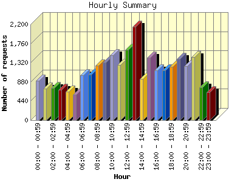
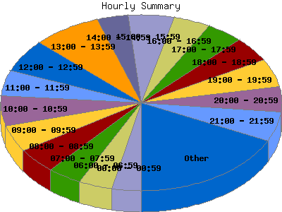

Report generated by Analog 6.0 and Report Magic 2.21
|
Web Server Statistics for "Harish Narayanan (hnarayan) - July 2007" Report generated by Analog 6.0 and Report Magic 2.21 |
The Hourly Summary identifies the level of activity broken down by each hour. Remember that one page hit can result in several server requests as the images for each page are loaded. This summary also compares the level of activity during working hours and after hours as a total for the report time frame.


| Hour | Number of requests | Number of bytes transferred | Percentage of the bytes | Percentage of the requests | |
|---|---|---|---|---|---|
| 1. | 00:00 - 00:59 | 904 | 55.418 MB | 4.13% | 3.37% |
| 2. | 01:00 - 01:59 | 727 | 31.933 MB | 2.38% | 2.71% |
| 3. | 02:00 - 02:59 | 735 | 31.442 MB | 2.34% | 2.74% |
| 4. | 03:00 - 03:59 | 701 | 50.067 MB | 3.73% | 2.61% |
| 5. | 04:00 - 04:59 | 651 | 52.063 MB | 3.88% | 2.42% |
| 6. | 05:00 - 05:59 | 587 | 46.611 MB | 3.47% | 2.19% |
| 7. | 06:00 - 06:59 | 1,031 | 55.190 MB | 4.11% | 3.84% |
| 8. | 07:00 - 07:59 | 1,048 | 58.658 MB | 4.37% | 3.90% |
| 9. | 08:00 - 08:59 | 1,257 | 65.162 MB | 4.85% | 4.68% |
| 10. | 09:00 - 09:59 | 1,322 | 86.556 MB | 6.44% | 4.92% |
| 11. | 10:00 - 10:59 | 1,491 | 34.797 MB | 2.59% | 5.55% |
| 12. | 11:00 - 11:59 | 1,272 | 53.977 MB | 4.02% | 4.74% |
| 13. | 12:00 - 12:59 | 1,612 | 106.046 MB | 7.89% | 6.00% |
| 14. | 13:00 - 13:59 | 2,142 | 78.247 MB | 5.83% | 7.97% |
| 15. | 14:00 - 14:59 | 952 | 63.101 MB | 4.70% | 3.54% |
| 16. | 15:00 - 15:59 | 1,436 | 44.981 MB | 3.35% | 5.35% |
| 17. | 16:00 - 16:59 | 1,143 | 72.973 MB | 5.43% | 4.25% |
| 18. | 17:00 - 17:59 | 1,140 | 33.606 MB | 2.50% | 4.24% |
| 19. | 18:00 - 18:59 | 1,223 | 63.810 MB | 4.75% | 4.55% |
| 20. | 19:00 - 19:59 | 1,409 | 47.012 MB | 3.50% | 5.25% |
| 21. | 20:00 - 20:59 | 1,237 | 35.911 MB | 2.67% | 4.61% |
| 22. | 21:00 - 21:59 | 1,448 | 55.244 MB | 4.11% | 5.39% |
| 23. | 22:00 - 22:59 | 754 | 59.563 MB | 4.43% | 2.81% |
| 24. | 23:00 - 23:59 | 641 | 60.879 MB | 4.53% | 2.39% |
| Work Hours (8:00am-4:59pm) | 12,627 | 605.839 MB | 45.10% | 47.01% | |
| After Hours (5:00pm-7:59am) | 14,236 | 737.407 MB | 54.90% | 52.99% | |
This report was generated on August 3, 2007 10:04.
Report time frame July 1, 2007 00:07 to July 31, 2007 23:50.
| Web statistics report produced by: | |
 Analog 6.0 Analog 6.0 |  Report Magic 2.21 Report Magic 2.21 |